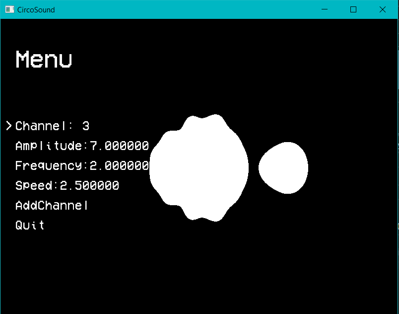
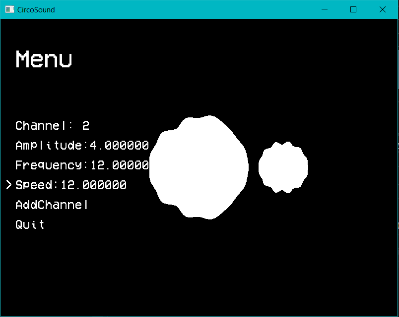

Sound Sphere
Fun side project experimenting with the layering of waves


During my graphics project in third year I propagated a wave round a sphere. I really enjoyed the way the sphere moved and changed depending on the values you set. I wanted to continue something along these lines so I created something similar in 2D but now with the added ability to add multiple waves. This can visualise constructive and deconstruction interference. It is still a work in progress but my plans for the project were to eventually add sounds and key presses that send single waves through the circle like a note being played on a key board for example. Sadly I ended up shelving the project but may come back and do more with it one day.